How to Print in the Microsoft Notepad App (Windows 11)
This tutorial covers:
How to Print:
How to Exit the Print Window
How to Add a Printer
How to Change the Number of Copies
How to Print to File
How to Let Notepad Change Printing Preferences
How to Print on Both Sides
No time to scroll down? Click through this tutorial presentation:
Watch a video tutorial:
How to Print With Menu
- Step 1: First open a Notepad file. In the upper left click the “File” button.

- Step 2: In the menu that opens, click “Print”. 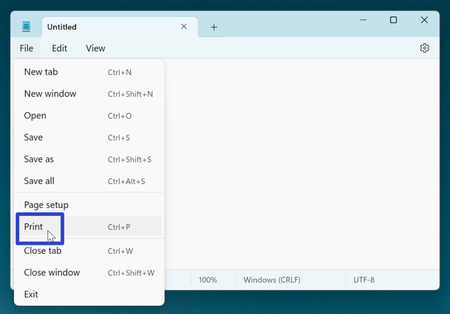
- Step 3: In the “Print” window that opens, click the “Print” button. 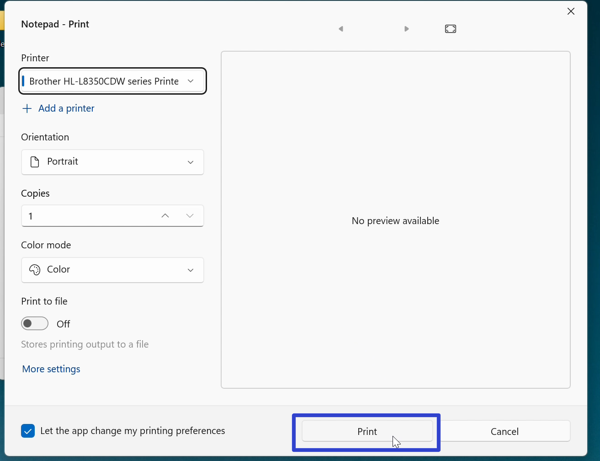
How to Print With Keyboard Shortcut
- Step 1: Open a Notepad file. On the keyboard press Ctrl + P. 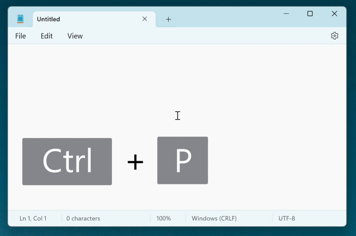
- Step 2: In the “Print” window that opens, click the “Print” button.
How to Exit the Print Window
- Step 1: First open the “Print” window. In the lower right click the “Cancel” button. 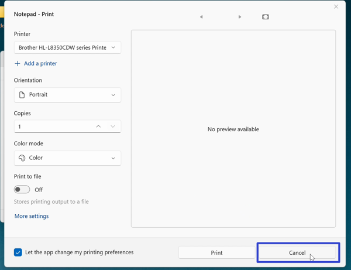
- Alternatively click the “Close” or “X” button in the upper right corner. 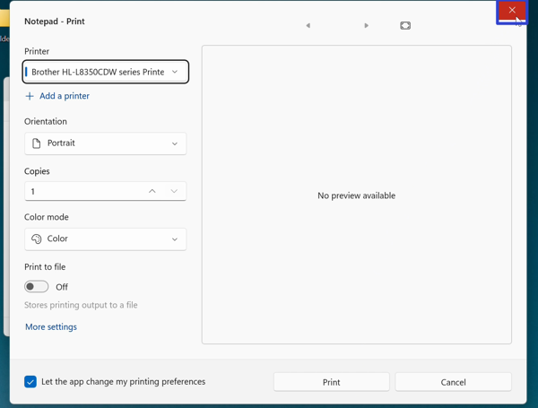
How to Add a Printer
- Step 1: Open the “Print” window. Under the “Printer” section click the “+ Add a printer” option. 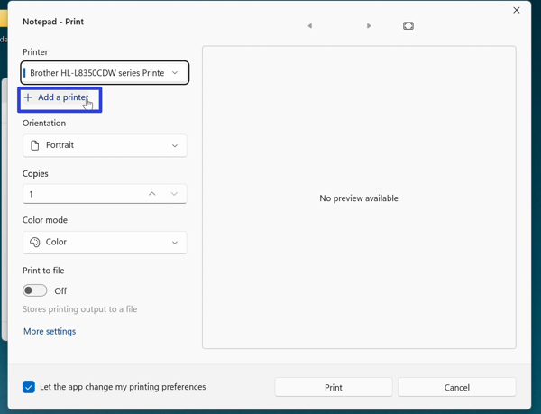
- Step 2: In the Windows 11 “Bluetooth & devices” settings window that opens, click the “Add device” button. The computer adds a new printer through a Bluetooth connection. 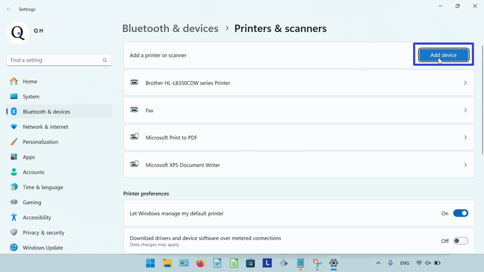
How to Change the Number of Copies
- Step 1: First open the “Print” window. Under the “Copies” section, click the up arrow button to increase the number of copies. Click the down arrow button to decrease the number of copies. 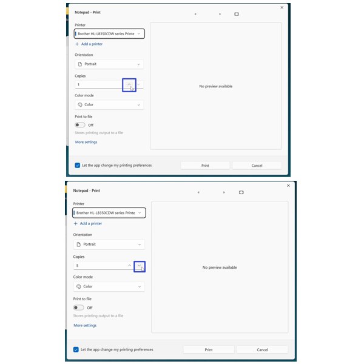
How to Print to File
- Step 1: Open the “Print” window. Click under the “Print to file” section to toggle this option on or off. 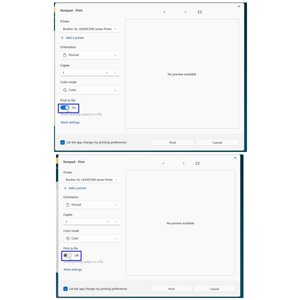
- Note: With “Print to file” on, Notepad creates a .prn file that outlines specific printing requirements of the file. Often these .prn files are transferred from computers lacking the necessary printer to other computers with printers that can handle the specific printing requirements. With “Print to file” off, Notepad does not create .prn files.
How to Let Notepad Change Printing Preferences
- Step 1: First open the “Print” window. In the lower left click the “Let the app change my printing preferences” to toggle this option on or off. 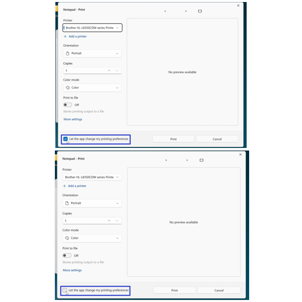
- With “Let the app change my printing preferences” on, Notepad overrides any selected printing options. With “Let the app change my printing preferences” off, Notepad saves any selected printing options.
How to Print on Both Sides
- Step 1: Open the “Print” window. In the lower left click “More settings”. 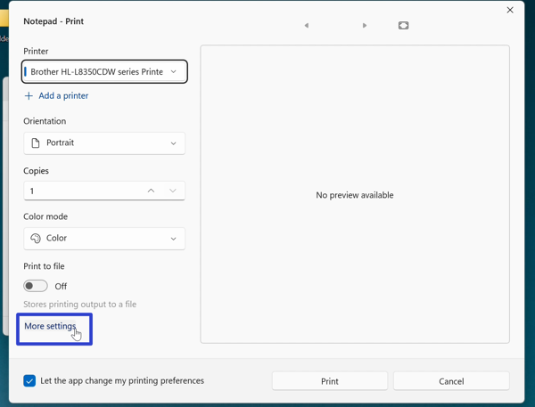
- Step 2: In the “Printing Preferences” window that opens, under the “Print on Both Sides” section click the drop-down menu to select either the “None”, “Flip on Short Edge”, or “Flip on Long” edge option, and click the “OK” button. 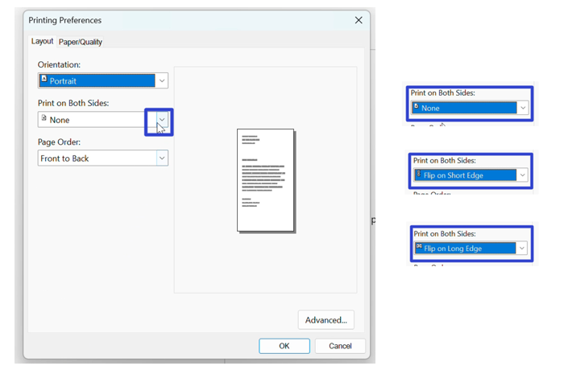
Save these instructions for later with this free PDF tutorial.